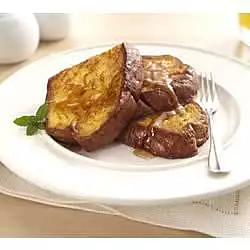

French Toast

Description
A fan favorite of those who enjoy eating bread with egg and spices. It's basically a breakfast sandwich just using the bread as a sponge!
Ingredients
- 1 large bread loaf
\
- 4 large eggs
- 1/2 cup milk
- 1/2 tsp vanilla extract
- 1/4 tsp ground cinnamon
- 2 tbsp butter or frying oil
- 2 tbsp maple syrup
Steps
- Insert Steps